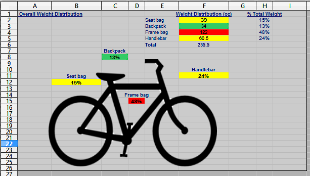
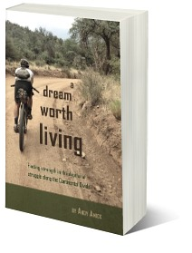
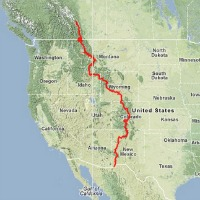

Bikepacking Gear List Template

Spreadsheet template to capture all gear and its weights. Displays how the total weights are distributed on the bike to help with equal distribution of weight when fully loaded.
Bikepacking resources built from real miles on the Tour Divide, the Colorado Trail, and beyond.

On Friday the 13th, under a full moon and falling rain, Andy Amick completed the first day of the 2014 Tour Divide race. He climbed mountain after mountain, witnessed stunning sunsets, encountered the smiles and hospitality of countless people, crossed paths with a mountain lion, and rode through enough mud to last a lifetime. This is the story of one man’s dream to race the Tour Divide and his determination to reach the finish.
Read it on Amazon →
Spreadsheet template to capture all gear and its weights. Displays how the total weights are distributed on the bike to help with equal distribution of weight when fully loaded.

Food, lodging, re-supply, and mileage for each town along the Tour Divide route.